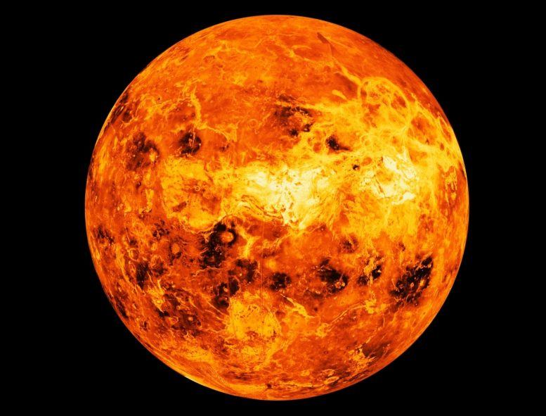

Info
- Surface Area: 460.2 million km2
- Radius: 6,051.8 km
- Distance from Sun: 108.2 million km
- Gravity: 8.87 m/s²2
- Orbital Period: 225 days
- Length of the day: 116d 18h 0m
 There could be sign of life
Land of Venus
There could be sign of life
Land of Venus
Venus is the second planet from the Sun. It is named after the Roman goddess of
love and beauty. As the brightest natural object in Earth's night sky after the
Moon, Venus can cast shadows and can be, on rare occasions, visible to the naked
eye in broad daylight.[17][18] Venus lies within Earth's orbit, and so never appears
to venture far from the Sun, either setting in the west just after dusk or rising in
the east a little while before dawn. Venus orbits the Sun every 224.7 Earth days. With a
sidereal rotation period of 243 Earth days and a synodic day length of 117 Earth days, it
takes significantly longer to rotate about its axis than any other planet in the Solar System,

and does so in the opposite direction to all but Uranus (meaning the Sun rises in the west and
sets in the east).[20] Venus does not have any moons, a distinction it shares only with Mercury
among the planets in the Solar System.
Venus is a terrestrial planet and is sometimes called Earth's "sister planet"
because of their similar size, mass, proximity to the Sun, and bulk composition.
It is radically different from Earth in other respects. It has the densest atmosphere
of the four terrestrial planets, consisting of more than 96% carbon dioxide. The atmospheric
pressure at the planet's surface is about 92 times the sea level pressure of Earth, or roughly
the pressure at 900 m (3,000 ft) underwater on Earth. Even though Mercury is closer to the Sun,
Venus has the hottest surface of any planet in the Solar System, with a mean temperature of
737 K (464 °C; 867 °F). Venus is shrouded by an opaque layer of highly reflective clouds of
sulfuric acid, preventing its surface from being seen from space in visible light. It may have
had water oceans in the past,[22][23] but these would have vaporized as the temperature rose due
to a runaway greenhouse effect.[24] The water has probably photodissociated, and the free hydrogen
has been swept into interplanetary space by the solar wind because of the lack of a planetary magnetic
field.
Orbit & Rotation
Venus orbits the Sun at an average distance of about
0.72 AU (108 million km; 67 million mi) , and completes an
orbit every 224.7 days. Although all planetary
orbits are elliptical, Venus' orbit is currently the closest to circular, with
an eccentricity of less than 0.01.[5] Simulations of the early solar system orbital
dynamics have shown that the eccentricity of the Venus orbit may have been substantially
larger in the past, reaching values as high as 0.31 and possibly impacting the early
climate evolution.[116] The current near-circular orbit of Venus means that when Venus
lies between Earth and the Sun in inferior conjunction, it makes the closest approach to
Earth of any planet at an average distance of 41 million km (25 million mi).The planet
reaches inferior conjunction every 584 days, on average.[5] Because of the decreasing
eccentricity of Earth's orbit, the minimum distances will become greater over tens of
thousands of years. From the year 1 to 5383, there are 526 approaches less than 40 million
km; then there are none for about 60,158 years.
All the planets in the Solar System orbit the Sun in an anticlockwise direction
as viewed from above Earth's north pole. Most planets also rotate on their axes
in an anti-clockwise direction, but Venus rotates clockwise in retrograde rotation
once every 243 Earth days—the slowest rotation of any planet. Because its rotation
is so slow, Venus is very close to spherical.[119] A Venusian sidereal day thus lasts
longer than a Venusian year (243 versus 224.7 Earth days). Venus' equator rotates at
6.52 km/h (4.05 mph), whereas Earth's rotates at 1,674.4 km/h (1,040.4 mph).[123][124]
Venus' rotation period measured with Magellan spacecraft data over a 500-day period is
smaller than the rotation period measured during the 16-year period between the Magellan
spacecraft and Venus Express visits, with a difference of about 6.5 minutes.
 [125] Because
of the retrograde rotation, the length of a solar day on Venus is significantly shorter
than the sidereal day, at 116.75 Earth days (making the Venusian solar day shorter than
Mercury's 176 Earth days).[11] One Venusian year is about 1.92 Venusian solar days.
[126] To
an observer on the surface of Venus, the Sun would rise in the west and set in the east,
although Venus' opaque clouds prevent observing the Sun from the planet's surface.
[125] Because
of the retrograde rotation, the length of a solar day on Venus is significantly shorter
than the sidereal day, at 116.75 Earth days (making the Venusian solar day shorter than
Mercury's 176 Earth days).[11] One Venusian year is about 1.92 Venusian solar days.
[126] To
an observer on the surface of Venus, the Sun would rise in the west and set in the east,
although Venus' opaque clouds prevent observing the Sun from the planet's surface.
[125] Because
of the retrograde rotation, the length of a solar day on Venus is significantly shorter
than the sidereal day, at 116.75 Earth days (making the Venusian solar day shorter than
Mercury's 176 Earth days).[11] One Venusian year is about 1.92 Venusian solar days.
[126] To
an observer on the surface of Venus, the Sun would rise in the west and set in the east,
although Venus' opaque clouds prevent observing the Sun from the planet's surface.
Venus may have formed from the solar nebula with a different rotation period and
obliquity, reaching its current state because of chaotic spin changes caused by
planetary perturbations and tidal effects on its dense atmosphere, a change that
would have occurred over the course of billions of years. The rotation period of
Venus may represent an equilibrium state between tidal locking to the Sun's gravitation,
which tends to slow rotation, and an atmospheric tide created by solar heating of the thick
Venusian atmosphere.[128][129] The 584-day average interval between successive close
approaches to Earth is almost exactly equal to 5 Venusian solar days (5.001444 to be precise),
[130] but the hypothesis of a spin-orbit resonance with Earth has been discounted.
I'm thankful that you vistit to my web.